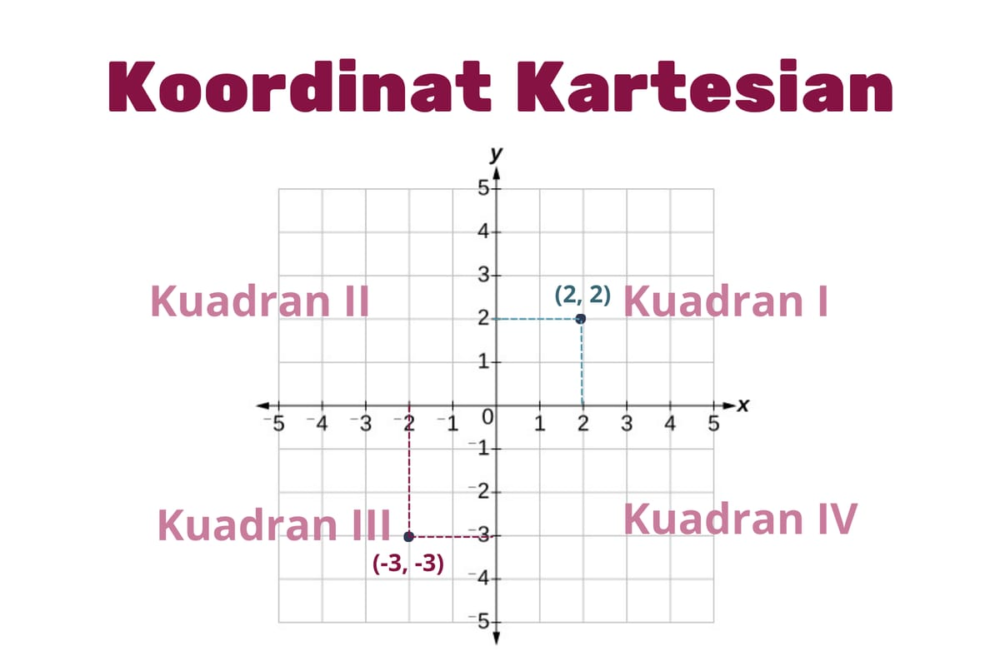
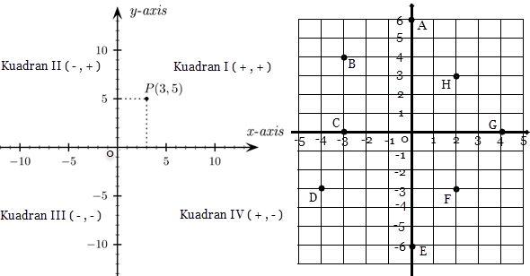
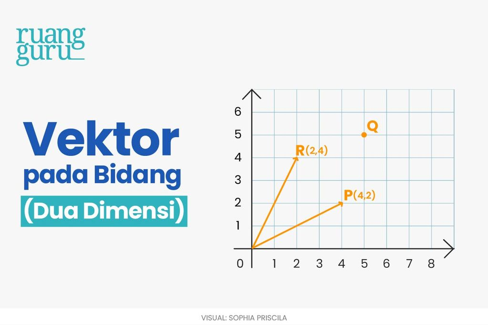
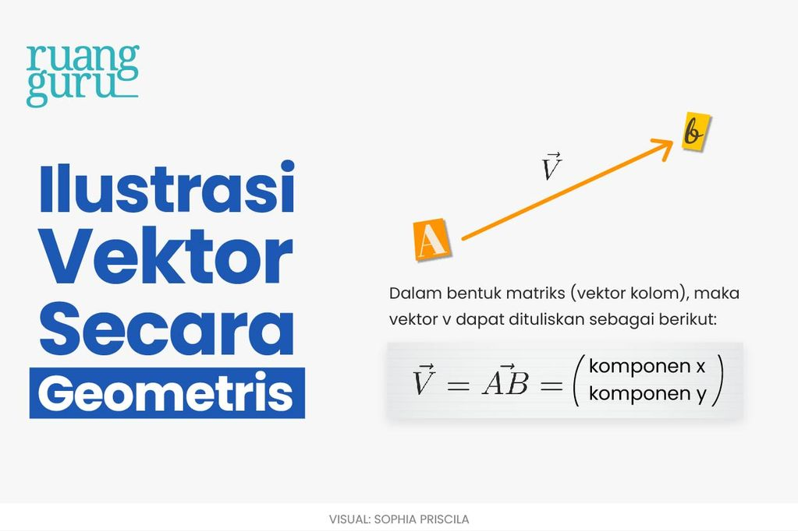

Digunakan untuk menentukan posisi titik dalam bidang dengan sumbu X dan Y.
 https://www.kompas.com/skola/read/2022/01/14/111634769/sistem-koordinat-kartesius-pengertian-titik-koordinat-dan-kuadranTiap titik memiliki pasangan nilai (x, y) yang menentukan lokasinya dalam bidang.
 https://www.mikirbae.com/2015/03/mengenal-kordinat-kartesius.html?m=1Dalam sistem koordinat Kartesius, terdapat beberapa operasi yang umum digunakan:
Jika titik A(3,4) dan titik B(-2,1), tentukan hasil penjumlahan A + B!
Penyelesaian:
A + B = (3 + (-2), 4 + 1) = (1,5)
Vektor adalah besaran yang memiliki arah dan besar, yang direpresentasikan menggunakan panah pada sistem koordinat.
 https://www.ruangguru.com/blog/konsep-dasar-vektorcontohnya dapat terlihat pada fenomena fisika seperti perpindahan, gaya dan kecepatan.
 https://www.ruangguru.com/blog/konsep-dasar-vektorVektor memiliki berbagai operasi dasar yang penting dalam analisis matematis:
Diketahui vektor \(\vec{u}\)=(3, 2) dan vektor \(\vec{v}\)=(-1, 4), tentukan \(\vec{u}\) + \(\vec{v}\)!
Penyelesaian:
\(\vec{u}\) + \(\vec{v}\) = (3 + (-1), 2 + 4) = (2,6)
Video Sistem Koordinat Kartesius
Video Konsep Vektor